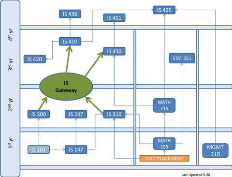

Home |
Undergraduate Program (Information Systems) |
Contact Us
Bachelor of Science in Information Systems
The BS program prepares students for all potential career positions in the IS field. These include: Systems Analysis and Design, Computer Networking and Health Care Informatics.
For successful completion of the degree, all students must satisfy the general education requirements that are explained in the UMBC Undergraduate Catalog.
The required program courses for the Bachelor of Science Degree are below. Course descriptions can be found in the Course Catalog.
Information Systems
- IS 300 - Management Information System
- IS 310 - Software and Hardware Concepts
- IS 410 – Introduction to Database Design
- IS 420 – Database Application Development
- IS 425 – Decision Support Systems
- IS 436 – Structured Systems Analysis and Design
- IS 450 – Data Communications and Networks
- IS 451 – Network Design and Management
- IS 3xx or 4xx – Upper Level IS Elective
(Students may not use IS 397, IS 399, IS 400, IS 467, IS 469, IS 478, IS 479, or any course being used to satisfy an IS certificate requirement.)
Mathematics and Computer Science
- MATH 155 – Applied Calculus
- MATH 215 – Finite Mathematics for Information Sciences
- STAT 351 – Applied Statistics for Business and Economics
- IS 147 – Introduction to Computer Programming or
- CMSC 201 – Computer Science I for Majors
- IS 247 – Computer Programming II or CMSC 202 – Computer Science II for Major
Administrative Science
- MGMT 210 – The Practice of Management
- ECON 101 – Principles of Microeconomics (SS)
- ECON 102 – Principles of Macroeconomics (SS)
- ECON 121 – Principles of Accounting I
- ECON 122 – Principles of Accounting II
- ENGL 393 – Technical Communication
Notes:
Students must earn a grade of “C” or better for any course to be applied to the Information Systems major.
Before being allowed to take IS 410 and 450 (and then the rest of the IS 400-level core courses), a student must first complete the following gateway requirements:
A grade of “C” or higher in:
- MATH 155 – Elementary Calculus and
- IS 147 – Introduction to Computer Programming
And a grade of “B” or higher in:
- IS 300 – Management Information Systems and
- IS 310 – Software and Hardware Concepts
Students may not repeat IS 300 or 310 more than once.
Students entering UMBC for the first time before Fall 2015 must earn a “B” average with no grade below a “C” in IS 300 and IS 310.
Examples of upper-level electives that could be used to help fulfill the IS major requirements include: IS 303, IS 304, IS 460, IS 461, IS 427, IS 428, IS 430, IS 438, IS 464, IS 471, IS 472, IS 451U, IS 451M, and IS 452, as well as others (see catalog for a full listing).
There are also several special courses, including IS 399, IS 478, IS 479, IS 469, IS 397, and IS 467, among others, that cannot be used to satisfy the IS upper-level elective requirement, but that students can use to gain academic credit for internships, coops, and research projects. See your advisor for more information.
Prerequisite Structure Chart:

Home |
Undergraduate Program (Information Systems) |
Contact Us